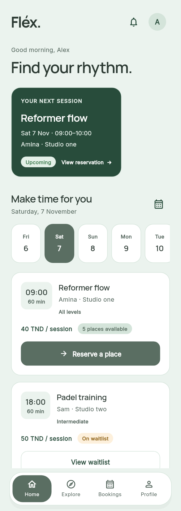
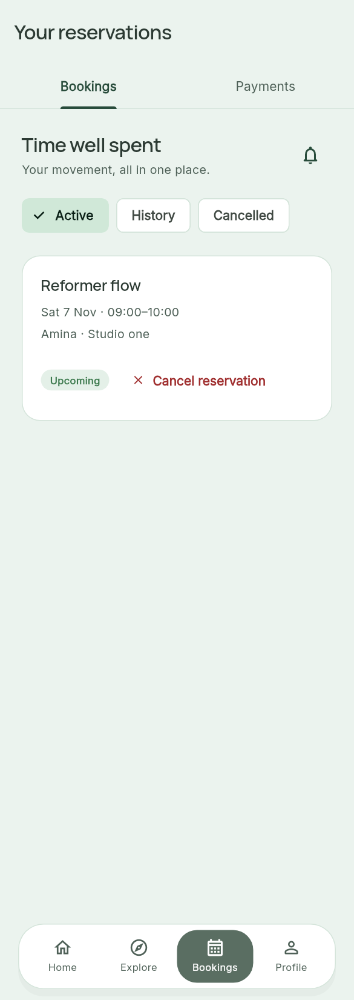
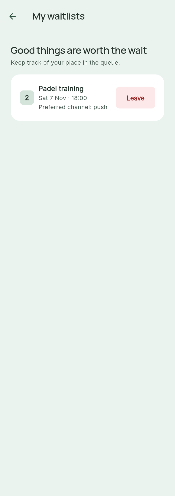
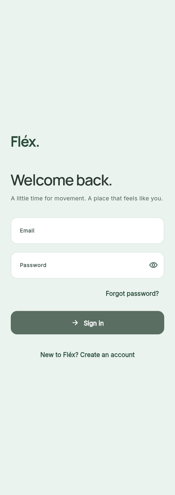
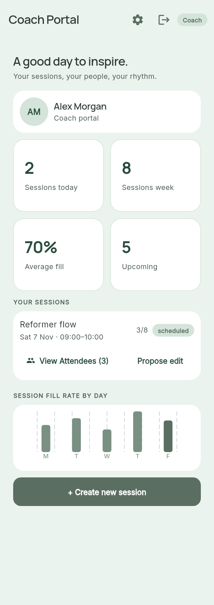
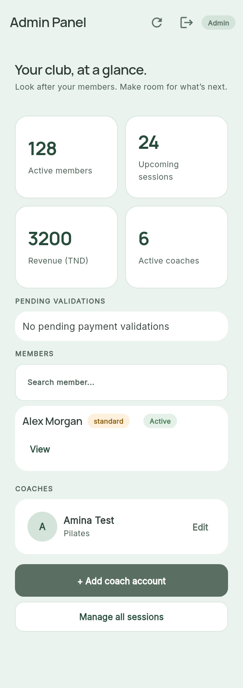

Fléx. Naturally in Motion.
Rendered Flutter screens from the implemented redesign: the original mint/sage identity, bundled typography, shared cards and controls, and clearer reservation and staff journeys.
Review fixtures, not live account data. These captures use the actual app widgets with illustrative data isolated in test/support/. Production screens continue to use Supabase. Recovery delivery and its callback were verified separately; authenticated booking and role checks remain documented in the implementation report.
Member Home

My bookings

My waitlists

Sign in

Coach portal

Administrator dashboard
